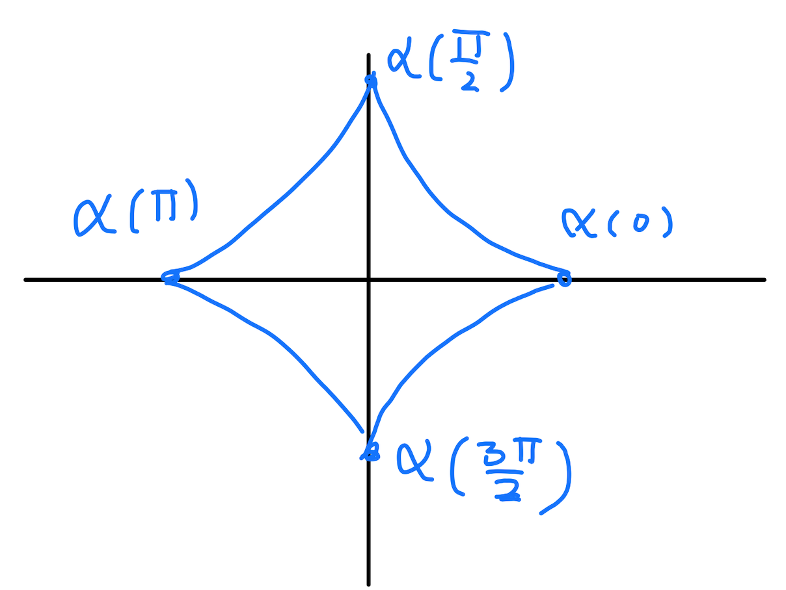

La integral con respecto a longitud de arco es otro
tipo de herramienta que asigna números a objetos
1-dimensionales (aunque en éste caso es más
ilustrativo pensar que asigna masas o pesos
a objetos 1-dimensionales). Vamos
a motivar la definición desde el punto de vista del
siguiente problema.
¿Cómo encontrar
la masa de un cable si su densidad en cada punto es
conocida?
Para empezar a resolver éste problema modelamos el
cable con una trayectoria suave, \(\alpha:[a,b]\to\mathbb{R}^3\).
Es importante notar que estamos suponiendo que el grosor del cable
no es relevante, por eso lo tratamos como un objeto 1-dimensional.
La densidad se modela con una función continua \(\rho(x,y,z)\).
Veamos
primero el caso de densidad constante en un cable que es un segmento
de línea recta. En este caso la masa es simplemente
la longitud del cable por la densidad.
Ahora supongamos que el cable está curveado
y que la densidad no es constante. En este caso
tenemos a la mano la vieja técnica Arquimedeana de
partir el cable en pedazos pequeños y estimar la
masa de cada pedazo como en el caso anterior.
Donde los puntos \(t_i^*\in [t_i, t_{i-1}]\) son cualesquiera,
pues ya que la densidad es continua el valor de \(\rho(\alpha(t_i^*))\)
no debería varia mucho en el intervalo \([t_{i-1},t_i]\). Con
esto podemos estimar la masa total del cable por:
\[
\sum_{i=1}^n \rho(\alpha(t_i^*))\| \alpha(t_i)-\alpha(t_{i-1})\|.
\]
Ahora
viene un paso crucial y algo que Arquímides no
podría haber hecho, pues se necesita el cálculo de Newton.
Vamos a aplicar el Teorema del Valor Medio para curvas.
El teorema del valor medio dice que dada una función
\(\alpha:[a,b]\to \mathbb{R}^n\),
continua en \([a,b]\), diferenciable con derivada
continua en \((a,b)\), existe un punto
\(c\in (a,b)\) para el cual
\[
\| \alpha(b)-\alpha(a)\| \leq \|\alpha'(c)\| (b-a)
\]
Aplicando la desigualdad anterior
a los intervalos \([t_{i-1},t_i]\) obtenemos que existen
puntos \(c_i\in (t_{i-1},t_i)\) para los cuales
\(\|\alpha(t_i)-\alpha(t_{i-1})\| \leq
\|\alpha'(c_i)\| (t_i-t_{i-1})\). Entonces
podemos estimar la masa
del cable mediante
\begin{equation}\label{Eqn:AproxIntLArc}
\sum_{i=1}^n \rho(\alpha(c_i))\|\alpha'(c_i)\| (t_{i}-t_{i-1})
\end{equation}
donde nota que ahora tomamos ventaja
de la flexibilidad de los puntos \(t_i^*\) y tomamos
\(t_i^*=c_i\).
Si observamos detenidamente la ecuación \eqref{Eqn:AproxIntLArc}, se puede ver
que es una suma de Rimann para la función
\(t \mapsto \rho(\alpha(t))\|\alpha'(t)\|\). Por lo tanto,
usando que tanto \(\rho\) como \(\alpha'\) son continuas, cuando
tomamos el número de puntos que tienda a infinito, digamos
en una partición uniforme, obtenemos que la estimación se
aproxima a
\[
\int_a^b \rho(\alpha(t))\|\alpha'(t) \| dt.
\]
Dicha expresión es la que se va a definir como la
integral de \(\rho\), a lo largo de \(\alpha\), con respecto a
longitud de arco.
Definición
A una función continua \(\alpha:[a,b]\to \mathbb{R}^n\)
se le llama una trayectoria o curva parametrizada continua
en \(\mathbb{R}^n\), o simplemente una trayectoria continua.
La trayectoria se llama suave si la derivada \(\alpha' \) existe
y es continua en todo punto de \( (a,b) \). En otras palabras si la
función \(\alpha\) es clase \(C^1\) en \([a,b]\). Por ejemplo,
en \(\mathbb{R}^2\) una curva tiene dos funciones coordenadas
\(\alpha(t)=(x(t),y(t))\) y para que \(\alpha\) sea suave
es equivalente pedir que las funciones \(x, y\) sean clase \(C^1\).
El punto \(\alpha(a)\) se llama el punto inicial y el
punto \(\alpha(b)\) se llama punto final.
Si \(\alpha(a)=\alpha(b)\)
la trayectoria se llama cerrada y si los extremos son los
únicos puntos donde la tayectoria coincide, se llama trayectoria
cerrada simple.
La traza de \(\alpha\) es simplemente su imagen,
es decir la traza es
\[
\{\alpha(t): t\in [a,b] \} \subset \mathbb{R}^n
\]
y es la representación gráfica de \(\alpha\) que usualmente se puede ver
(como el círculo \(C\) de la introducción).
Para hacer la teoría más flexible vamos a ampliar la clase
de curvas que vamos a estudiar. Vamos a considerar curvas
que estan formadas por "cachos suaves". Por ejemplo las
que se forman con pegar cachos de circunferencia
y segmentos de línea o curvas que tienen picos
(como la gráfica del valor absoluto). Estas curvas se llaman suaves a
trozos.
Una trayectoria \(\beta:[a,b] \to \mathbb{R}^n\) se llama suave a
trozos si existe una partición \(\{ a=t_0< t_1 < \cdots < t_n=b \}\)
de \([a,b]\), tal que para todo \(i=1,\dots, n\), \(\beta\) restringida a
\([t_{i-1},t_i]\) es una trayectoria suave.
Ejemplos
Circunferencia.
Uno de los ejemplos de trayectorias suaves más comunes.
Corbata de moño .
Este es un ejemplo de una curva cerrada, pero NO es simple,
pues se pueden encontrar tres puntos distintos (tres valores
de \(t\) distintos) que pasan por el centro.
El logo de batman. Está es una curva suave a trozos
(noten los picos, en esas partes la función deja de ser differenciable).
Es sorprendente que las funciones que dan NO están definidas a trozos.
Tridimensional.
Hasta ahora se han visto ejemplos en dos dimensiones pero
las trayectorias pueden vivir en espacios de cualquier dimensión.
Ejercicio
Para cada uno de los siguientes subconjuntos \(S\),
encuentra una trayectoria suave o suave a trozos cuya
traza sea \(S\).
\(S=\{(x,y): x^2/a^2 + y^2/b^2 =1\}\), donde \(a,b\) son
constantes distintas de cero.
\(S=\{(x,y): |x|+|y|=1 \}\).
\(S= \{ (x,y,z): x^2+y^2=1, \, x+y+z=1 \} \).
\(S\) es el perímetro del triángulo unitario en \(\mathbb{R}^2\).
Definición
Consideremos \(\alpha:[a,b]\to \mathbb{R}^n\)
una curva suave cuya traza está contenida en \(D\) sea \(f:D\to \mathbb{R}\)
una función continua en \(D\). Nota que entonces la composición
\(f\circ \alpha\) es continua en \([a,b]\).
La integral con respecto a longitd
de arco de \(f\) a lo largo de
\(\alpha\) se define como
\[
\int_a^b f(\alpha(t))\| \alpha'(t)\|dt.
\]
Notación. Se usa \(ds\) ó \(|d\alpha|\)
para denotar la integral con respecto a longitud de arco:
\[
\int_\alpha f ds :=\int_a^b f(\alpha(t))\| \alpha'(t)\|dt,
\]
ó
\[
\int_\alpha f |d\alpha| :=\int_a^b f(\alpha(t))\| \alpha'(t)\|dt.
\]
Esta última notación es ilustrativa pues se puede pensar
\(|d\alpha|=\|\alpha'(t)\|dt.\)
Ejercicio
Demuestra que
\[
\int_\alpha (a+bx+cy+dxy+ex^2+fy^2 )ds=2\pi r a+ \pi r^3(e+f)
\]
donde \(a,b,c,d,e,f\) son constantes y
\(\alpha\) es la circunferencia de radio \(r\) y centrada
en el origen.
Prueba. Primero parametricemos una circunferencia de radio \(r \)
\(( \text{ con } r > 0)\) y con centro en el origen. Sea
\(\alpha : [0, 2\pi ] \subseteq \mathbb{R} \rightarrow \mathbb{R}^{2}\)
definida como \[ \alpha (t) = (r \cos(t), r \sen(t)) \]
Es claro que \(\alpha\) parametriza la circunferencia de radio \(r\) y con
centro en el origen. Además \(\alpha^{\prime}(t) = (-r \sen(t), r \cos(t))\).
Por lo tanto
\[
\| \alpha^{\prime}(t) \| =
\sqrt{(-r \sen(t))^{2} + (r \cos(t))^{2}} = r
\]
Ahora podemos desarrollar la siguiente integral,
\begin{eqnarray*}
& & \int_{\alpha}(a + bx + cy + dxy + ex^{2} + fy^{2}) ds \\
&=&
\int_{0}^{2\pi}\big[ a + b(r\cos(t)) + c(r\sen(t)) + dr^{2}\cos(t)\sen(t) \\
& &
\hspace{ 3pt} + er^{2}\cos^{2}(t) + fr^{2}\sen^{2}(t) \big] \cdot r dt \\
& = &
r \int_{0}^{2\pi}\Bigg[ a + br\cos(t) + cr\sen(t) + dr^{2}\dfrac{\sen(2t)}{2} \\
& & \hspace{3pt} + er^{2}\left(\dfrac{1 + \cos(2t)}{2}\right)
+ fr^{2}\left(\dfrac{1 -\cos(2t)}{2}\right) \Bigg] dt \\
& = &
r \int_{0}^{2\pi}\Bigg[ a + \dfrac{er^{2}}{2} + \dfrac{fr^{2}}{2} \Bigg] dt \\
& = & 2\pi r\Bigg[ a + \dfrac{er^{2}}{2} + \dfrac{fr^{2}}{2} \Bigg] \\
& = & 2\pi ra + \pi r^{3}(e +f) \hspace{3pt}
\end{eqnarray*}
La tercera igualdad es consecuencia de que
\[
\int_{0}^{2\pi}\cos(t) dt = \int_{0}^{2\pi}\sen(t) dt
= \int_{0}^{2\pi}\cos(2t) dt = \int_{0}^{2\pi}\sen(2t) dt = 0
\]
Por lo tanto \(\int_{\alpha}(a + bx + cy + dxy + ex^{2} + fy^{2}) ds
= 2\pi ra + \pi r^{3}(e +f)\).
Nota
Una aparente desventaja es que
una curva parametrizada parecería no ser objetiva,
es decir depende de quién la da. Por ejemplo consideremos
las dos curvas
\begin{eqnarray*}
\alpha(t)&=&(\cos(t),\sen(t)), t\in [0,2\pi]\\
\beta(t)&=&(\cos(2t), \sen(2t)), t\in [0,\pi]
\end{eqnarray*}
Ambas tienen la misma traza y ambas recorren el círculo unitario una sóla vez. Como
curvas son distintas pues una curva es por definición una función
y las funciones \(\alpha\) y \(\beta\) son distintas (tienen
distintas reglas de correspondencia y distintos dominios). En el fondo
deberían ser la misma curva parametrizada, pero no lo son. Para
solucionar este detalle vamos a definir una relación de equivalencia
y bajo esta relación las curvas \(\alpha\) y \(\beta\) van a
ser equivalentes, no son estrictamente iguales, pero van a ser equivalentes
en muchas cosas, entre otras en sus integrales.
Definición
Dos trayectorias continuas
\(\alpha: [a,b] \to \mathbb{R}^n, \beta:[c,d]\to \mathbb{R}^n \)
se llaman equivalentes si existe una función \(u:[a,b] \to [c,d]\)
tal que:
\(u\) es continua en \([a,b]\), diferenciable en \((a,b)\),
\(u([a,b])=[c,d]\),
\(u'\) nunca se anula en \((a,b)\),
para todo \(t\in [a,b]\), se tiene que \(\beta(u(t))=\alpha(t)\).
Nota: que se tiene la identidad, \(\beta(u(t))=\alpha(t)\) para todo \(t\) se sigue que las
curvas \(\alpha\) y \(\beta\) tienen la misma traza.
Lema
Sean \(\alpha:[a,b]\to \mathbb{R}^n\) y
\(\beta:[c,d]\to \mathbb{R}^n\) dos curvas suaves
equivalentes y supongamos que su traza está contenida en \(D\). Sea \(f:D\to \mathbb{R}\) una
función continua. Demuestra que
\[
\int_\alpha f |d\alpha|= \int_\beta f |d\beta|.
\]
No podemos dejar de enfatizar que este ejercicio muestra
que:
"la integral con respecto a longitud de arco
no depende de la parametrización de la curva""
Según la definición
\[
\int_\alpha f ds= \int_a^b f(\alpha(t))\| \alpha'(t)\| dt,
\]
\[
\int_\beta f ds= \int_a^b f(\beta(\tau))\|\beta'(\tau)\| d\tau.
\]
por lo que debemos de probar
\[
\int_a^b f(\alpha(t))\| \alpha'(t)\| dt=
\int_a^b f(\beta(\tau))\|\beta'(\tau)\| d\tau.
\]
Pero recordemos que \(\alpha\) y \(\beta\) son curvas
equivalentes, por lo tanto, existe \(u:[a,b]\to [c,d]\)
clase \(C^1\), cuya derivada nunca se anula y
tal que \(\beta(u(t))=\alpha(t)\)
para toda \(t\in [a,b]\). Por la regla de la cadena
\[
\alpha'(t)=\beta'(u(t))u'(t)\Rightarrow \|\alpha'(t)\|=
|u'(t)|\|\beta'(u(t))\|
\]
y por lo tanto
\[
\int_a^b f(\alpha(t))\| \alpha'(t)\| dt=
\int_a^b f(\beta(u(t)))\|\beta'(u(t))\||u'(t)|dt.
\]
Por lo que debemos de probar
\[
\int_a^b f(\beta(u(t)))\|\beta'(u(t))\||u'(t)|dt=
\int_c^d f(\beta(\tau))\|\beta'(\tau)\| d\tau.
\]
En este punto tenemos dos casos.
Primer caso: \(u'(t)>0\) para toda \(t\in (a,b)\).
En este caso \(|u'(t)|=u(t)\) y
\[
\int_a^b f(\beta(u(t)))\|\beta'(u(t))\||u'(t)|dt
=\int_a^b f(\beta(u(t)))\|\beta'(u(t))\|u'(t)dt.
\]
Además \(u\) es estrictamente creciente
y por lo tanto \(u(a)=c, u(b)=d\). Entonces, por el teorema
del cambio de variable (con \(\tau=u(t)\))
\[
\begin{eqnarray*}
\int_a^b f(\beta(u(t)))\|\beta'(u(t))\|u'(t)dt
&=&
\int_{u(a)}^{u(b)} f(\beta(\tau))\|\beta'(\tau)\| d\tau \\
&=&\int_{c}^{d} f(\beta(u))\|\beta'(\tau)\| d\tau.
\end{eqnarray*}
\]
Segundo caso: \(u'(t)< 0\) para toda \(t\in (a,b)\).
Este caso es el interesante pues aparecerá un cambio de
signo. En efecto, ya que la derivada es negativa
\(|u'(t)|=-u(t)\) y
\[
\int_a^b f(\beta(u(t)))\|\beta'(u(t))\||u'(t)|dt=
-\int_a^b f(\beta(u(t)))\|\beta'(u(t))\|u'(t)dt.
\]
Además, \(u\) es estricamente decreciente y
por lo tanto \(u(a)=d\) y \(u(b)=c\). Entonces, por el
teorema del cambio de variable (con \(\tau=u(t)\))
\[
\begin{eqnarray*}
-\int_a^b f(\beta(u(t)))\|\beta'(u(t))\|u'(t)dt
&=&
-\int_{u(a)}^{u(b)} f(\beta(\tau))\|\beta'(\tau)\|d\tau\\
&=&-\int_{d}^c f(\beta(\tau))\|\beta'(\tau) \|d\tau \\
&=&\int_{c}^d f(\beta(\tau))\|\beta'(\tau) \|d\tau.
\end{eqnarray*}
\]
Nota el cambio de orden en los límites de integración
y la cancelación del signo menos.
Ejercicio
Calcula las siguientes integrales con respecto a longitud de arco.
\[
\int_\alpha xe^{yz}
\]
donde \(\alpha\)
es el segmento de recta que une \((0,0,0)\)
con \((2,-3,-5)\)
\[
\int_\alpha xy^4 ds
\]
donde \(\alpha\) es la cuarta parte de la circunferencia \(x^2+y^2=9\)
que está en el primer cuadrante.
\[
\int_\alpha x^2+y^2+z^2ds
\]
donde \(\alpha(t)=(e^{2x},\cos(t),\sen(t))\), \(0\leq t \leq \pi\).
Ejercicio
Considera la función escalar \(f(x,y,z)=cx\), donde
\(c\) es una constante. Prueba que si la curva
\(\alpha\) es perpendicular al eje \(x\), es decir
\(\alpha(t)\cdot (1,0,0)=0\) para toda \(t\), entonces
\[
\int_\alpha f(x,y,z)ds=0
\]
Nota
Es crucial señalar que es muy importante cómo se recorre
la curva para el resultado de la integral con respecto a
longitud de arco. Por ejemplo, si la curva se recorre múltiples
veces el resultado de la integral de línea muy probablemente
dependerá de cuantas veces se recorre. El siguiente ejercicio
ilustra esto.
Ejercicio
Para \(n\in \mathbb{Z}\) considera la trayectoria
\(\alpha_n(t)=(\cos(nt),\sen(nt))\), \(0\leq t \leq 2\pi\)
(el circulo unitario recorrido \(n\)-veces). Prueba
\begin{eqnarray*}
\int_{\alpha_n} 1 ds&=&2\pi |n| \\
\int_{\alpha_n} x^2ds&=& \int_{\alpha_n} y^2ds =\pi |n|\\
\end{eqnarray*}
Nota que la \(n\) aparece con valor absoluto.
Si \(\alpha\) es el segmento de recta
que une el punto \((r,0)\) con \((0,r)\), (con \(r>0\)) entonces:
\[
\int_\alpha (x+y)ds=\sqrt{2}r^2.
\]
Si \(\beta\) es el segmento de circunferencia
de \(x^2+y^2=r^2\), que une \((r,0)\) con \((0,r)\),
(con \(r>0\)) y que está por arriba del eje de las \(x\) entonces:
\[
\int_\beta (x+y)ds=2r^2.
\]
Ejercicio
Por \(\alpha\) denotamos una circunferencia
centrada en el origen de radio \(r>0\).
Para un cable, tendido a lo largo de una curva \(\alpha\), con
densidad continua \(\rho(x,y,z)\) (masa por unidad de volumen) en el punto
\((x,y,z)\), se define la
masa del cable como
\[
\textrm{Masa}:=\int_\alpha \rho(x,y,z)ds.
\]
Las coordenadas de su centro de masa (o centroide), denotadas
\((\bar{x},\bar{y}, \bar{z})\),
están dadas por
\[
\bar{x}=\frac{1}{M}\int_\alpha x \rho(x,y,z)ds,
\]
\[
\bar{y}=\frac{1}{M}\int_\alpha y \rho(x,y,z)ds,
\]
\[
\bar{z}=\frac{1}{M}\int_\alpha z \rho(x,y,z)ds.
\]
Si recordamos que una integral es en el fondo un promedio,
estas definiciones tienen sentido pues estamos tomando simplemente
el promedio de la masa que se distribuye a lo largo del eje \(x\),
\(y\) o \(z\).
Dado un eje \(L\) en el espacio, el momento de incercia con respecto a \(L\)
se define como
\[
\int_\alpha (\lambda(x,y,z))^2 \rho(x,y,z)ds
\]
donde \(\lambda(x,y,z)\) denota la distancia del punto
\((x,y,z)\) al eje \(L\).
Nota: si el cable "está aplanado", la función densidad sólo depende
de dos variables \(\rho(x,y)\) y las integrales anteriores se ajustán a sólo
dos variables, desapareciendo la coordenada \(z\).
Ejercicio
Considera un cable helicoidal dado por \(\alpha(t)=(a\cos(t),a\sen(t),bt)\),
\(0 \leq t \leq 2\pi\). Si la densidad está dada por
\(\rho(x,y,z)=x^2+y^2+z^2\) calcula:
Considera un cable, de forma semicircular de radio \(r>0\), de
densidad constante.
Encuentra \(M\), la masa del cable.
Prueba que el centroide del cable cae en el eje de simetría
del cable a una distancia \(2r/\pi\) de su centro.
Prueba que el momento de incercia, con respecto al diámetro
que une los extremos del cable, es \(\frac{1}{2}r^2M\).
Definición
Sea \(f:U\to \mathbb{R}\) una función continua
en \(U\). Si \(\beta:[a,b] \to \mathbb{R}\) es una trayectoria parametrizada
suave a trozos (con traza contenida en \(U\)) y
\( \{a=t_0< \cdots < t_n=b \}\) es una partición de \([a,b]\)
tal que \(\beta\) restringida a \([t_{j-1}, t_{j}]\) es suave, definimos
\[
\int_\beta f ds = \sum_{j=1}^n \int_{\beta_j} f ds
\]
donde \(\beta_j\) es simplemente la restricción de \(\beta\)
al intervalo \([t_{j-1},t_j]\).
Al igual que con
la integral de línea
ésta definición no depende de la partición de \([a,b]\) que se tome.
Ejercicio
Calcula las siguientes integrales con respecto a la longitud de
arco.
\[
\int_\alpha e^yds
\]
donde \(\alpha\) es la parte de la gráfica de
\(|x|+|y|=2\) que está por arriba del eje de las \(x\).
\[
\int_\alpha xy ds
\]
donde \(\alpha\) está dada como en la figura de abajo.
\[
\int_\alpha x ds
\]
donde \(\alpha(t)=(\cos^3(t),\sen^3(t))\), \(0\leq t \leq 2\pi\).
La curva se muestra en la figura de abajo.

Nota
Longitud de una curva
Dada una curva continua \(\alpha:[a,b]\to \mathbb{R}^n\) un problema
es clacular su longitud. Una solución aproximada a este problema
es dividir la curva en pequeños segmentos y aproximar la longitud de
cada segmento por la longitud del segmento de recta que uno a sus extremos.
\[
\textrm{Longitud}(\alpha)\approx \sum_{i=1}^n \|\alpha(t_i)-\alpha(t_{i-1}) \|
\]
donde \(a=t_0 < t_1 < \cdots < t_{n-1}< t_n=b\) es una partición del
intervalo \([a,b]\) y la aproximación es cada vez mejor si \(n\) tiende a infinito
y los puntos de la partición se distribuyen uniformemente en \([a,b]\).
Si \(\alpha\) es suave por el Teorema del valor medio para curvas podemos estimar cada sumando como
\[
\|\alpha(t_i)-\alpha(t_{i-1}) \| \approx \| \alpha'(c_i)\| (t_{i}-t_{i-1})
\]
donde \(c_i\in (t_{i-1}, t_i)\). Por lo tanto
Tomando en cuenta de que \(\alpha'\) es continua y si tomamos la partición uniforme
en \([a,b]\) sabemos (cálculo 2) que
\[
\lim_{n\to \infty} \sum_{i=1}^n \|\alpha'(c_i) \|(t_{i-1}-t_i)=\int_a^b \|\alpha'(t)\|dt
\]
Por lo anterior se define la longitd de una curva suave \(\alpha:[a,b]\to \mathbb{R}^n\) como
\[
L(\alpha)=\int_{a}^b \|\alpha'(t)\|dt.
\]
Ejemplos
El ejemplo más sencillo es un segmento de recta. Claramente
el segmento de recta que une \(p\) a \(q\) tiene longitud \(\|p-q\|\).
Ahora vamos a obtener el mismo resultado mediante una parametrización. Al parametrizar el
segmento de recta llegamos a
\[
\alpha(t)=p+t(q-p), \quad 0\leq t \leq 1
\]
Entonces \(\alpha'(t)=q-p\) y por lo tanto
\[
L(\alpha)=\int_{0}^1 \|\alpha'(t)\|dt=\int_0^1 \|p-q\| dt = \|p-q\|.
\]
Definición
Dada una curva suave \(\alpha:[a,b] \to \mathbb{R}^n\),
a el vector \(\alpha'\) se le llama el vector velocidad
y si \(\alpha'(t)\ne 0\) puede pensarse como un vector tangente
a la curva en el punto \(\alpha(t)\).
Decimos que una curva suave
está parametrizada por longitud de arco si \(\|\alpha'(t)\|=1\)
para toda \(t\in (a,b)\). Esto quiere decir que
el vector tangente en cada punto es un vector unitario.
Ejercicio
Prueba que las siguientes curvas están parametrizadas
por longitud de arco.
Este ejercicio prueba que toda curva suave, cuyo vector velocidad no se anula,
se puede reparametrizar por longitud de arco.
Sea \(\alpha:[a,b]\to \mathbb{R}\) una curva suave tal que para todo
\(t\in (a,b)\)
\[
\alpha'(t) \ne 0
\]
Sea \(L\) la longitd de \(\alpha\). Entonces existe una función
\(v:[0,L]\to \mathbb{R}^n\) tal que
\(v\) es continua en \([0,L]\), diferenciable en \((0,L)\),
\(v([0,L])=[a,b]\),
\(v'>0\) en \((a,b)\),
si definimos \(\beta(s)=\alpha(v(s))\) entonces \(\|\beta'(s)\|=1\)
para todo \(s\in (0,L)\).
Decimos que \(\beta\) es una reparametrización de \(\alpha\) por longitud de arco.
Ejercicio
Encuentra la masa de un cable, cuya forma está dada por la intersección
de la esfera \(x^2+y^2+z^2=1\) y el plano \(x+y+z=0\) y cuya
densidad estádada por \(\rho(x,y,z)=y^2\).
Teorema
Sea \(\alpha\)
una curva parametrizada suave a trozos, cuya traza está contenida en \(D\) y
\(f,g:D\to \mathbb{R}\) dos funciones continuas en \(D\). Prueba
\[
\int_\alpha (c f + g ) |d\alpha| = c \int_\alpha f |d\alpha| + \int_\alpha g |d\alpha|
\]
donde \(c\in \mathbb{R}\) es un escalar arbitrario.
Por definición:
\begin{eqnarray*}
\int_\alpha (c f + g ) |d\alpha|&=& \int_{a}^b (cf(\alpha(t))+g(\alpha(t)))\|\alpha'(t)\|dt \\
&=& c \int_{a}^b f(\alpha(t))\|\alpha'(t)\|dt
+ \int_a^b g(\alpha(t))\|\alpha'(t)\|dt \\
&=& c\int_{\alpha}f|d\alpha|+ \int_{\alpha} g |d\alpha|
\end{eqnarray*}
Teorema
Teorema del Valor Medio para curvas
Supongamos que tenemos una curva suave \(\alpha:[a,b]\to \mathbb{R}^n\). Entonces
existe un \(c\in (a,b)\) tal que
\[
\|\alpha(b)-\alpha(a)\| \leq (b-a)\|\alpha'(c)\|
\]
Si \(\alpha(a)=\alpha(b)\) la desigualdad del resultado es claro, así que
podemos suponer \(\alpha(a)\ne \alpha(b)\).
Definimos la función \(g:[a,b]\to \mathbb{R}\) por
\[
g(t)=(\alpha(b)-\alpha(a))\cdot \alpha(t)
\]
Ya que \(\alpha\) es una curva suave se sigue que \(g\) es
continua en \([a,b]\) y diferenciable en \((a,b)\), cumpliendo
las hipótesis del Teorema del valor medio para derivadas
y por lo tanto existe un \(c\in (a,b)\) que satisface
\[
g(b)-g(a)=g'(c)(b-a)
\]
pero
\begin{eqnarray*}
g(b)-g(a)&=&(\alpha(b)-\alpha(a))\cdot \alpha(b)-(\alpha(b)-\alpha(a))\cdot \alpha(a)\\
&=& (\alpha(b)-\alpha(a))\cdot (\alpha(b)-\alpha(a)) \\
&=& \|\alpha(b)-\alpha(a)\|^2
\end{eqnarray*}
y el segundo término es
\begin{eqnarray*}
g'(c)(b-a)&=&(b-a) [(\alpha(b)-\alpha(a))\cdot \alpha'(c)]
\end{eqnarray*}
y por la desigualdad de Cauchy-Schwartz ésta última igualdad implica
\[
|(b-a) [(\alpha(b)-\alpha(a))\cdot \alpha'(c)]| \leq (b-a)\| \alpha(b)-\alpha(a)\| \|\alpha'(c)\|
\]
Substituyendo ésta información en el Teorema del valor medio llegamos a
\begin{eqnarray*}
\|\alpha(b)-\alpha(a)\|^2 \leq (b-a)\|\alpha(b)-\alpha(a)\| \| \alpha'(c)\|
\end{eqnarray*}
Ya que \(\alpha(a)\ne \alpha(b)\) podemos cancelar \(\|\alpha(b)-\alpha(b)\|\)
y concluir
\[
\|\alpha(b)-\alpha(a)\|\leq (b-a) \| \alpha'(c)\|
\]